This article is an adapted version of the rgbif article found here.
It is often useful to create a map from GBIF mediated occurrences. While it is always possible to take a screenshot of map on gbif.org, sometimes a publication quality map is needed.
Additionally, large downloads of millions of lat-lon points can be difficult to plot using ggplot2 or base R graphics. In these cases, using the GBIF maps API with rgbif::map_fetch() can be a good option.
Using rgbif::map_fetch()
rgbif has a function called map_fetch(), which interfaces directly with the GBIF maps API. Running map_fetch() will return the default GBIF pixel map of all GBIF mediated occurrences.
1
2
library(rgbif)
map_fetch()
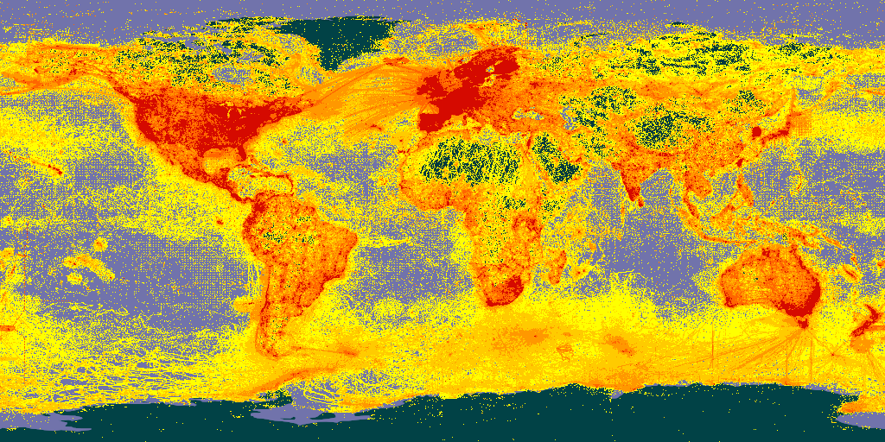
It is possible to make static maps that look like default occurrence search maps. See the maps api page for available styles.
1
map_fetch(taxonKey=212,style="scaled.circles",base_sytle="gbif-light")
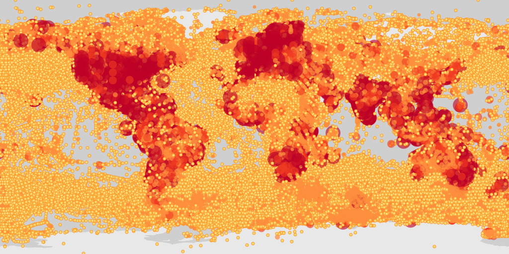
For “poly” styles you can set the hexPerTile parameter, so that the binned occurrence data is essentially shown at a higher resolution. A tile is an individual png image that is fetch from the API in order to make a map. The default settings of map_fetch() will fetch two images (hemispheres), so the image below has 400 hexagons across the width of map.
1
map_fetch(hexPerTile=200,style="green.poly",base_style="gbif-dark",bin="hex")
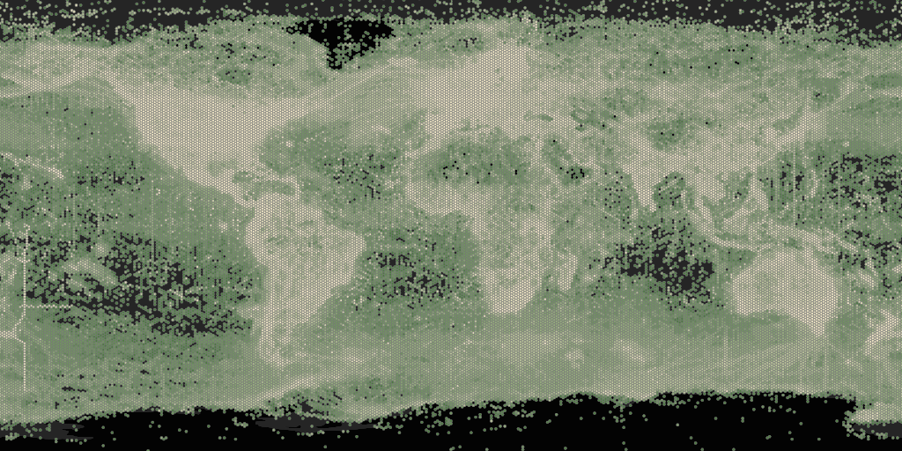
There is the option to plot with polar or arctic projections. For example, penguin records.
1
map_fetch(srs='EPSG:3031',taxonKey=7190978,style='glacier.point', base_style="gbif-dark")
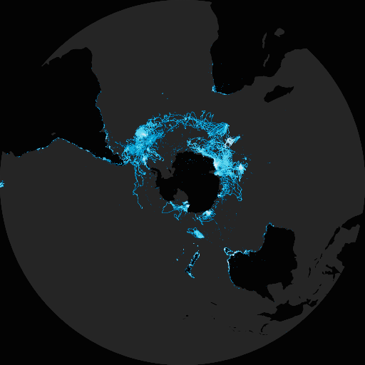
map_fetch() allows for views other than just the global map, by zooming in and selecting only certain map tiles with z, x, y.
Selecting tiles can be tricky to get right, but with a little trial-and-error, you can usually get close to the map you want to have. One trick for getting the right tiles, is to look at this demo page, where the z,x,y values are printed on the center of each tile.
For example, you can see what the tile values for a zoomed in map of Australia would be here.
1
map_fetch(z=3,x=13:14,y=4:5)
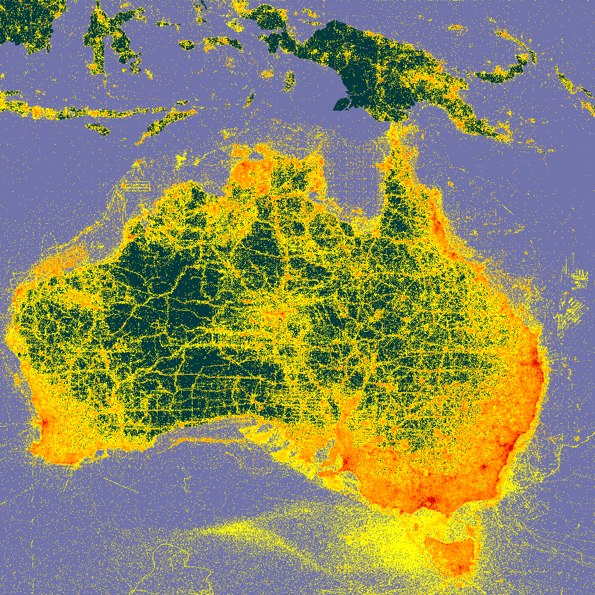
Be aware that selecting many tiles will create a large image, and might crash your R session. You can control the resolution of your final image with format, with format="@4x.png" being the highest possible value.
Below are some plotted areas to give you an idea of how z,x,y it are working.
1
2
# Europe
map_fetch(z=3,x=7:9,y=0:2)
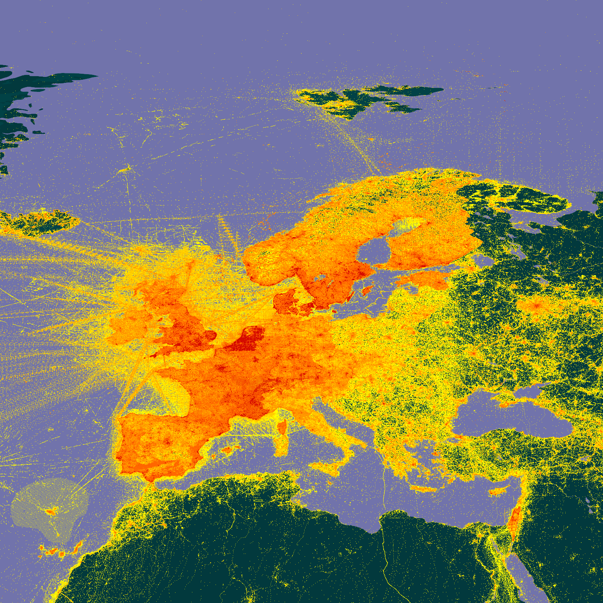
1
2
# Africa
map_fetch(z=3,x=7:10,y=2:5)
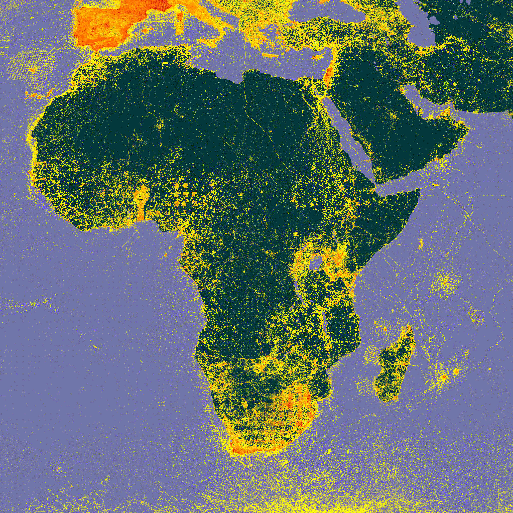
1
2
3
4
5
6
7
8
9
10
11
# I will leave it to you to plot these.
# Hawaii
map_fetch(z=6,x=6:9,y=23:25)
# South Africa
map_fetch(z=5,x=34:38,y=19:22)
# Ukraine
map_fetch(z=6,x=70:78,y=13:16)
# Iceland
map_fetch(z=6,x=55:59,y=8:9)
# Capri Is.
map_fetch(z=12,x=4419:4420,y=1124:1125)
I suggest using this interactive page for getting the tile numbers.
Keep in mind that the the GBIF maps API wasn’t designed to make high quality static maps, like it is being used for in map_fetch(). It was designed for interactive use on the GBIF website, so the API design reflects this reality. This means that not all parameter and style choices are going to make nice looking maps. That said, map_fetch() will try to prevent you from making bad style choices, but sometimes you might end up with a ugly map.
1
2
# ugly map
map_fetch(x=0,gadm_gid="USA",source="adhoc",style="classic.point")
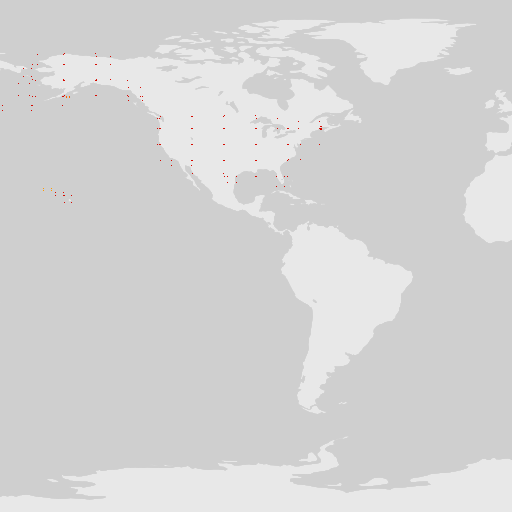
When making maps, the named parameters, taxonKey, datasetKey, country, publishingOrg, publishingCountry, year, and basisOfRecord are going to be the easiest to use. However, It is possible to make “any” map (any search filter) using source=adhoc.
1
2
3
# all occurrences with iucn status critically endangered
map_fetch(z=1,x=0:3,y=0:1,source="adhoc",iucn_red_list_category="CR",
style="iNaturalist.poly",base_style='osm-bright',bin="hex")
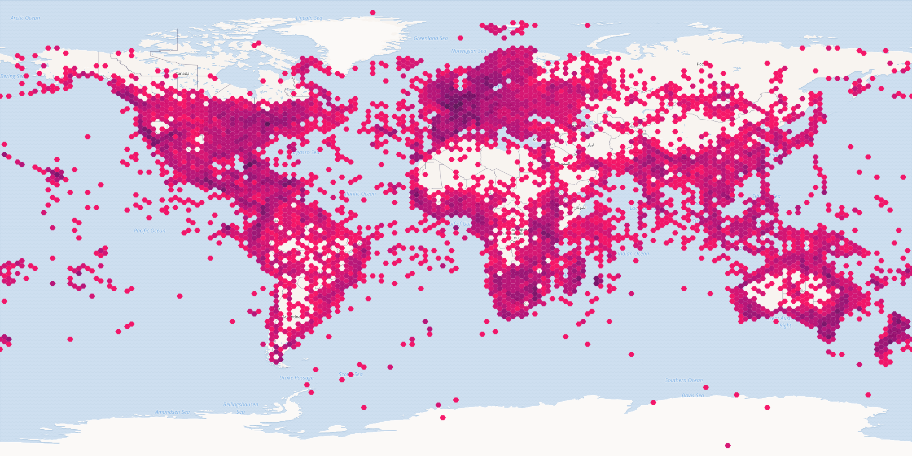
map_fetch() can also tell when you have used a parameter that is not a default parameter and automatically switch to source="adhoc" for you. I have found that point style don’t work well with source="adhoc", so map_fetch() will give a warning if you try to use a point style with source="adhoc".
Here are some examples of maps with different parameters and styles.
adhoc is needed here because recordedBy isn’t one of the named parameters. map_fetch() automatically detects this and switches source to “adhoc”. Note the default style for the adhoc interface is scaled.circles and base map style gbif-light.
1
map_fetch(recordedBy="John Waller")
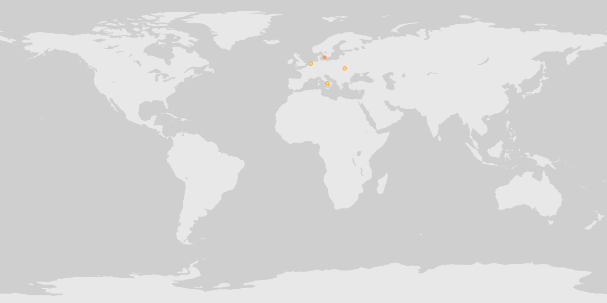
Occurrences in the OBIS network. Note that squareSize only works with bin="square". Also notice that the map only returns one tile since we didn’t set x or y values.
1
map_fetch(z=1,source="adhoc",style="green.poly",squareSize=64,bin="square",network_key="2b7c7b4f-4d4f-40d3-94de-c28b6fa054a6")
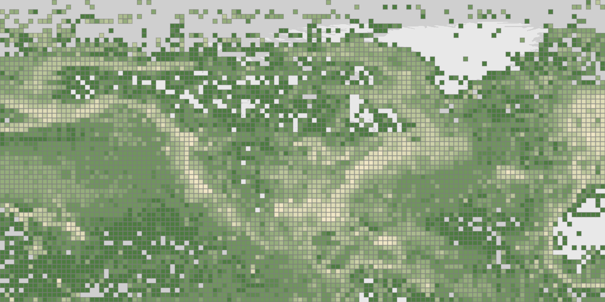
Map of Texas using the gadm filter. I looked up the gadm_gid code using the GBIF web interface.
1
map_fetch(z=4,x=6:7,y=4:5,gadm_gid="USA.44_1",style="blue.marker")
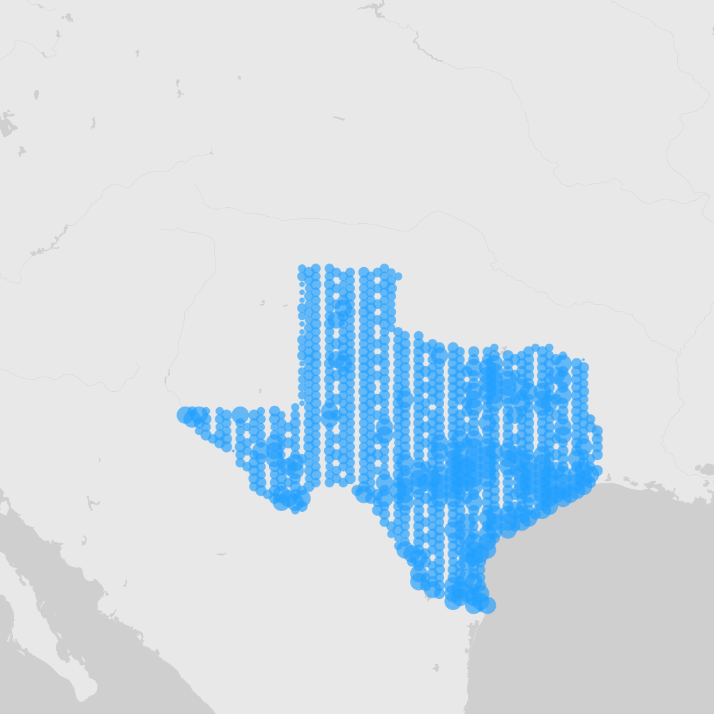
map_fetch() is generally forgiving and will give you back at least some map with warnings or blank images when the parameters don’t work. You can see in the image below that there are three blank images stitched together.
1
map_fetch(x=1:5) # no tiles exist past 2, so blank images are returned
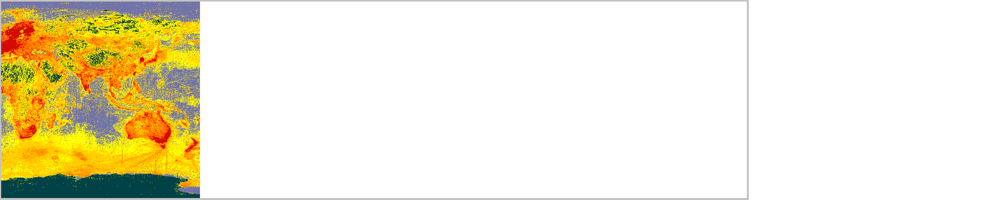
All specimen bird records from the year 2000.
1
map_fetch(taxonKey=212, basisOfRecord="PRESERVED_SPECIMEN", year=2000,style="classic-noborder.poly")
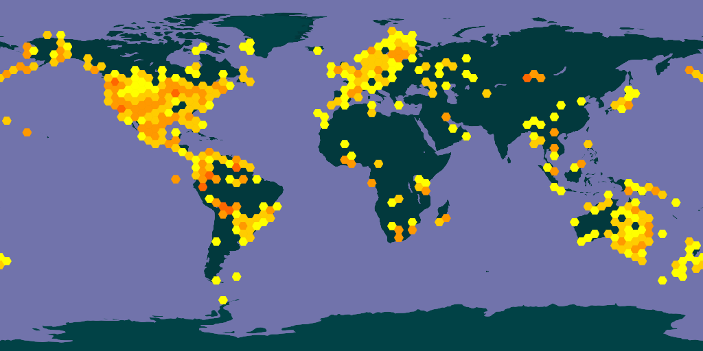
Map of all country centroid locations.
1
map_fetch(distanceFromCentroidInMeters=0,base_style="osm-bright")
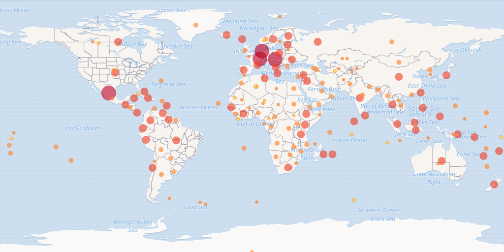
In general, adhoc maps are harder to make look nice, but usually picking a non-point style and tuning hexPerTile and perhaps also squareSize, will make a nice map.
1
map_fetch(source="adhoc",project_id="BID-AF2015-0134-REG",style="green2.poly",hexPerTile=50)
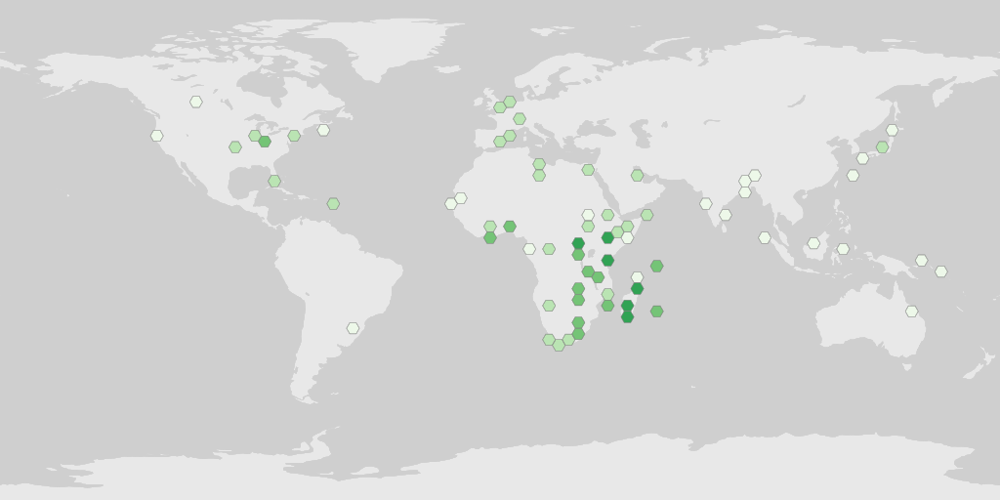
A tip for getting the un-named adhoc parameters is to pull them from the occurrence search URL after looking them up via the web interface.
1
2
# https://www.gbif.org/occurrence/map?advanced=1&project_id=BID-AF2015-0134-REG
map_fetch(source="adhoc",project_id="BID-AF2015-0134-REG")
You can read more about map_fetch() on the rgbif documentation website here.
Using ggplot2::geom_sf()
The GBIF maps API is powerful and useful, but can be frustrating if your plot needs a some custom styling or legends. If you don’t have a large dataset, then using ggplot::geom_sf() can be a good option.
1
2
3
4
5
6
7
8
9
10
11
12
13
14
15
16
17
18
19
20
21
library(rgbif)
library(ggplot2)
library(sf)
library(rnaturalearth)
# occ_download(pred_default(),pred(taxonKey,"1427067"),format="SIMPLE_CSV")
worldmap <- ne_countries(scale = 'medium', type = 'map_units',returnclass = 'sf')
# a download I made of all Calopteryx splendens occurrences
d <- occ_download_get('0001707-230810091245214') %>%
occ_download_import()
d_sf <- sf::st_as_sf(d, coords = c("decimalLongitude", "decimalLatitude"),
crs = "+proj=longlat +datum=WGS84")
# color occurrences by basisOfRecord
ggplot() +
geom_sf(data = worldmap) +
geom_sf(data = d_sf,aes(color=basisOfRecord))
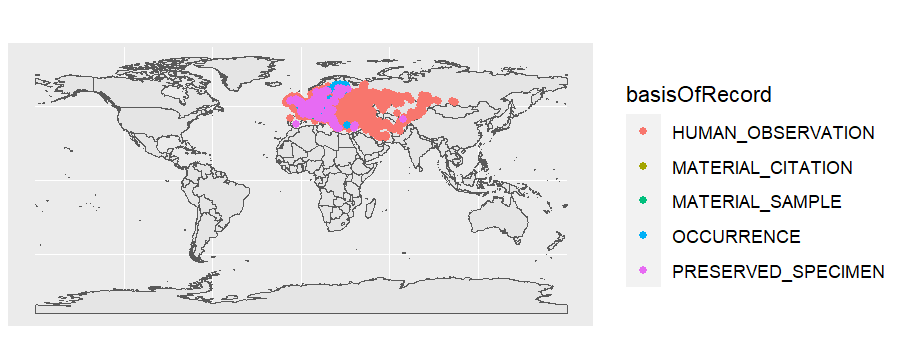
See ggplot2 docs for more.
Using leaflet
Since the GBIF maps API was designed to work as an interactive map, it can be used with leaflet.
1
2
3
4
5
6
library(leaflet)
leaflet() %>%
addTiles() %>%
addTiles(urlTemplate='https://api.gbif.org/v2/map/occurrence/density/{z}/{x}/{y}@1x.png?style=scaled.circles&taxonKey=5219404')
See leaflet docs for more.
Citing maps data
If you generate a map that you will use in a publication, it is good practice to cite the underlying data. This can be done by generating a download using the same filters you used in your map.
See articles :
You might also want to cite Open Street Map, if you use a base map that uses their data.
- https://tile.gbif.org/ui/
- https://wiki.openstreetmap.org/wiki/Researcher_Information